Detector Image Size and Format
Each UDP port creates its own output file, which contains the data of the image transmitted over that port. More on number of files and naming for each file in the File format section.
Jungfrau
Single Port Configuration
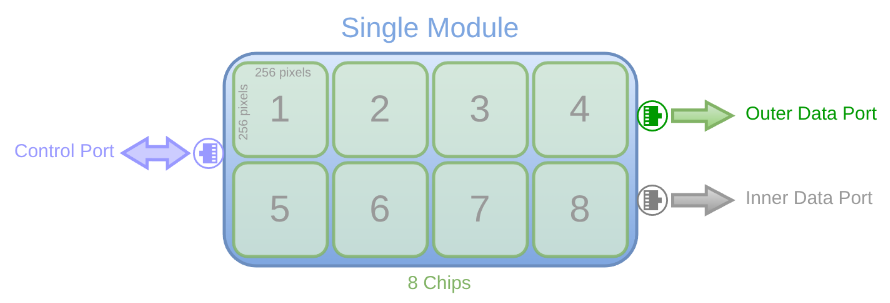{kind=link}
By default, only the outer 10GbE interface is enabled, transmitting the full image over a single UDP port. This results in one file per module containing the complete image.
- Total image size = 524,288 bytes
8 chips (2 x 4 grid)
256 x 256 pixels (chip size)
2 bytes (pixel width)
Double Port Configuration
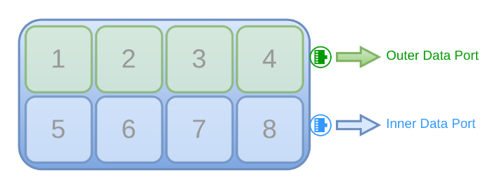{kind=link}
If both interfaces are enabled using the numinterfaces command on compatible hardware and firmware, the image splits into top and bottom halves sent over two UDP ports:
The top half transmits via the inner interface (udp_dstport2 and udp_dstip2).
The bottom half uses the outer interface(udp_dstport and udp_dstip).
The number of files per module equals the active UDP ports—two files per module when both interfaces are used.
- Image size per UDP port or File = 262,144 bytes
Complete Image size / 2
Read Partial Rows
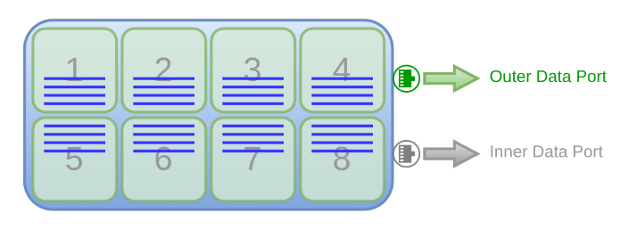{kind=link}
The number of image rows per port can be adjusted using the readnrows command. By default, 512 rows are read, but a smaller value centers the readout vertically (e.g., 8 rows reads 4 above and 4 below the center). Increasing the value symmetrically expands the region toward the top and bottom. Permissible values are multiples of 8.
- Total image size = 32,768 bytes
8 chips (2 x 4 grid)
8 x 256 pixels (chip size: 8 rows)
2 bytes (pixel width)
Note: Still in prototype stage, writes complete image (padded or not depending on rx_padding parameter) to file. Only the summary written to console in the receiver handles the readnrows to calculate to calculate complete images received. Only reduces network load, not file size. Use rx_roi for file size.
Moench
Single Port Configuration
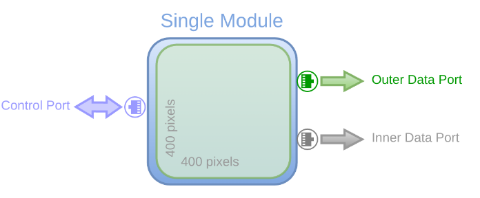{kind=link}
By default, only the outer 10GbE interface is enabled, transmitting the full image over a single UDP port. This results in one file per module containing the complete image.
- Total image size = 320,000 bytes
400 x 400 pixels (chip size)
2 bytes (pixel width)
Double Port Configuration
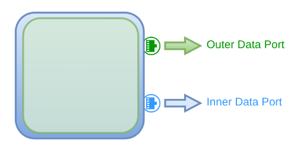{kind=link}
If both interfaces are enabled using the numinterfaces command on compatible hardware and firmware, the image splits into top and bottom halves sent over two UDP ports:
The top half transmits via the inner interface (udp_dstport2 and udp_dstip2).
The bottom half uses the outer interface(udp_dstport and udp_dstip).
The number of files per module equals the active UDP ports—two files per module when both interfaces are used.
- Image size per UDP port or File = 160,000 bytes
Complete Image size / 2
Read Partial Rows
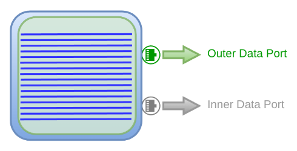{kind=link}
The number of image rows per port can be adjusted using the readnrows command. By default, 400 rows are read, but a smaller value centers the readout vertically (e.g., 16 rows reads 8 above and 8 below the center). Increasing the value symmetrically expands the region toward the top and bottom. Permissible values are multiples of 16.
- Total image size = 12,800 bytes
16 x 400 pixels (chip size: 16 rows)
2 bytes (pixel width)
Note: Still in prototype stage, writes complete image (padded or not depending on rx_padding parameter) to file. Only the summary written to console in the receiver handles the read n rows to calculate complete images received. Only reduces network load, not file size. Use rx_roi for file size.
Eiger
Default Configuration
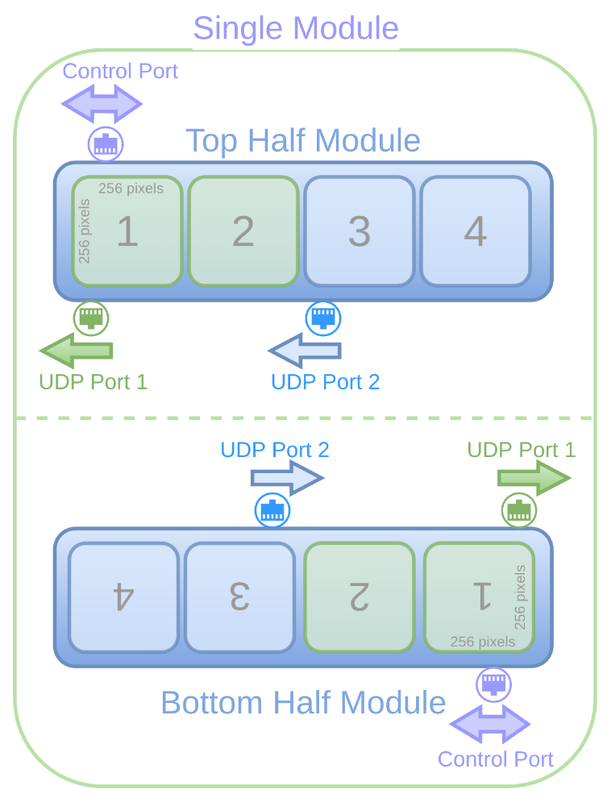{kind=link}
Each Eiger module has two independent identical readout systems (other than firmware), each with its own control port and hostname to be configured with. They are referred to as the ‘top’ and ‘bottom’ half modules. The bottom half module is flipped vertically.
Each half module has 2 parallel UDP ports for 2 chips each. The left UDP port is configured with udp_dstport, while the right UDP port is configured with udp_dstport2. This is vice versa for the bottom half module.
- Image size per UDP port or File = 262,144 bytes
2 chips (1 x 2 grid)
256 x 256 pixels (chip size)
2 bytes (default pixel width)
The myth, the legend, the bottom ports: Demystifying them
{kind=link}
How the firmware gets the images
{kind=link}
After the firmware flips it horizontally
{kind=link}
After the software swaps the udp ports
{kind=link}
After the gui has flipped the bottom vertically
Note: The same process happens for the bottom 2 udp ports of the quad.
Pixel width
The pixel width can be configured to 4, 8, 16 (default) or 32 bits using the command dr. This affects image size per UDP port or file.
Flip rows
One can use the command fliprows to flip the rows vertically for the bottom or top half module. It is sent out to the reciever, but does not flip rows in the output file itself, but rather streams out this info via the json header and thus instructs the GUI to display them correctly.
1GbE/ 10GbE Interfaces
Both UDP ports udp_dstport and udp_dstport2 are used in Eiger as shows in the figure. Both of them can be set to use either the 1GbE or the 10GbE interface for data. The 1GbE interface is used also for control and configuration. For data, the 1GbE interface is enabled by default. It can be disabled by enabling the tengiga command and updating both the udp_dstport , udp_dstport2 , udp_dstip commands to match the 1GbE or 10GbE interface. This setting only affects packetsize and number of packets, but does not affect the total image size.
Reducing network load
Activate: By default, the hostname command activates the respective half module it connects to, enabling all UDP ports. To deactivate an entire half module (i.e., both UDP ports), use the activate command. This disables both UDP ports for that half module, so no data is transmitted from it — only half of the module is read out. To specify which half module to activate or deactivate, use the module index (for Eiger, each half module has its own module index).
Datastream: The datastream command with arguments to specify which port can be used to disable the data streaming from one or both the two UDP ports in a half module. This allows for more flexible configurations, such as reading only two chips or one UDP port of a half module. To specify which half module to activate or deactivate, use the module index (for Eiger, each half module has its own module index).
Note: Only the activated ports will write data as it does not make sense to write an empty file.
Read Partial Rows: The number of image rows per port can be adjusted using the readnrows command. By default, 256 rows are read, but a smaller value centers the readout vertically (e.g., 8 rows reads 4 above and 4 below the center). Increasing the value symmetrically expands the region toward the top and bottom. Permissible values depend on dynamic range and 10GbE enable.
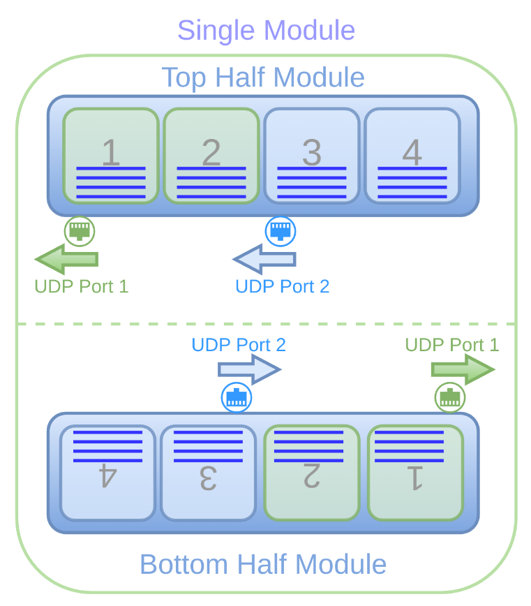{kind=link}
- Total image size per UDP Port = 8,192 bytes
2 chips (1 x 2 grid)
8 x 256 pixels (chip size: 8 rows)
2 bytes (default pixel width)
Note: Still in prototype stage, writes complete image (padded or not depending on rx_padding parameter) to file. Only the summary written to console in the receiver handles the readnrows to calculate complete images received. Only reduces network load, not file size. Use rx_roi for file size.
Quad
The Eiger quad is a special hardware configuration that uses only the top half-module to create a quad layout. In this setup, the second half of the top module—normally associated with the right-side UDP port—is used to represent the inverted bottom half of the quad.
As with any standard half-module, it includes one control TCP port (with a hostname) and two UDP data ports (top and bottom). When the quad option is enabled, the firmware automatically flips the second UDP port vertically.
In this configuration, the fliprows command cannot be used to flip the entire half-module. Instead, the receiver automatically includes row-flipping information only for the second UDP port in the JSON header, so the GUI can apply the correct orientation during display
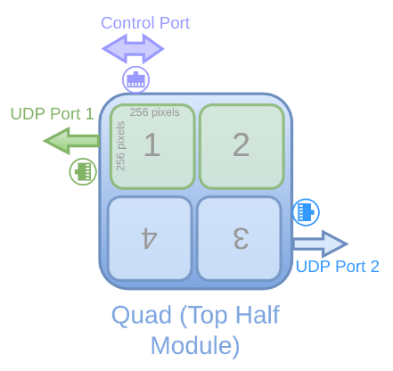{kind=link}
Image size per UDP port = same as a normal Eiger UDP port
Mythen3
Default Configuration
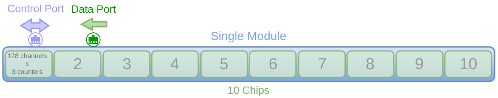{kind=link}
Each Mythen3 module is a 1D detector with 10 chips, each with 128 channels. Each channel has 3 counters that are enabled by default.
- Image size = 15,360 bytes
10 chips (1 x 10 grid)
128 channels
3 counters
4 bytes (default pixel width)
Counters
If all 3 counters are enabeld, the frame size for each channel is multiplied by 3. The counters are stored consecutively per channel. One can disable one or more of the counters using the counters command. The frame size will then be reduced accordingly.
- Image size = 10,240 bytes
10 chips (1 x 10 grid)
128 channels
2 counters (0, 1 enabled)
4 bytes (default pixel width)
Pixel width
The pixel width can be configured to 8, 16 or 32 (default) bits using the command dr. 32 bits is actually 24 bits in the chip. This setting does affect image size.
1GbE/ 10GbE Interfaces
The UDP port can be set to use either the 1GbE or the 10GbE interface for data. The 1GbE interface is used also for control and configuration. For data, the 10GbE interface is enabled by default. It can be disabled by using the tengiga command and updating the udp_dstport and udp_dstip commands to match the 1GbE or 10GbE interface. This setting only affects packetsize and number of packets, but does not affect the total image size.
Gotthard2
Default Configuration
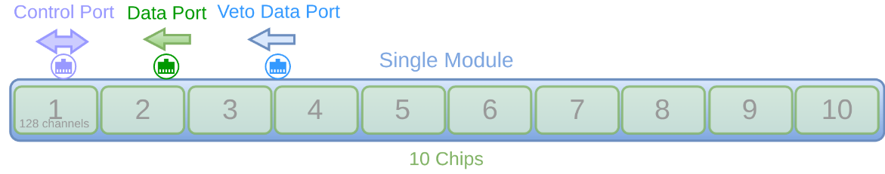{kind=link}
Each Gotthard2 module is a 1D detector with 10 chips, each with 128 channels.
- Image size = 2,560 bytes
10 chips (1 x 10 grid)
128 channels
2 bytes (pixel width)
Veto Info
One can enable veto data in the chip of the Gotthard2 module using the veto command. By default, this is disabled. This does not affect the image size as veto information is not sent out through the same 10GbE interface.
One can either stream out the veto info through the low latency link (2.5 gbps) or for debugging purposes through another 10GbE interface.
For debugging purposes, the veto info can be enabled using the numinterfaces command and the following parameters are updated: udp_dstport2 and udp_dstip2. The veto data from this port is of course written to a separate file and is not combined in the virtual HDF5 file mapping (complete image mapped).